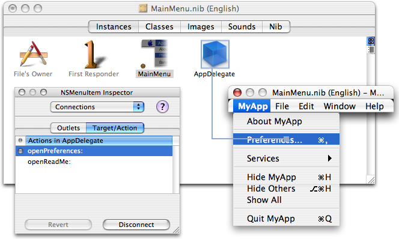

|
Q: How do I enable the application menu's "Preferences" menu item on Mac OS X?A: For the "Preferences" menu item to be enabled in a Cocoa application you must setup the target-action mechanism or the communication between the Note: There is nothing special about the Preferences menu item. This is merely an example of the more general case of automatic menu item enabling for menus. To enable this menu item two conditions must be met:
If you do not meet both conditions, then the Preferences menu item will remain disabled. Define The Action MethodThe action is the message your Listing 1: Example action method
-(IBAction)openPreferences:(id)sender
{ }
Set Target-Action ConnectionUsing Interface BuilderFigure 1: Connecting NSMenuItem to your IBAction method: control drag from the menu item to your object.  Using CodeAlthough using Interface Builder is the straight forward way, you can do the same thing using code. Listing 2: Setting the target and action with code.
NSMenu *menu = [[[[NSApplication sharedApplication] mainMenu] itemAtIndex:0] submenu];
NSString *prefsTitle = [NSString stringWithFormat:@"Preferences%C", (unichar)0x2026];
NSMenuItem *prefsMenuItem = [menu itemWithTitle:prefsTitle];
if (prefsMenuItem)
{
[prefsMenuItem setTarget:self];
[prefsMenuItem setAction:@selector(openPreferences:)];
}
Related Documentation
Document Revision History
Posted: 2008-01-21 |
|